spp endemics area elevation nearest size_cat
Baltra 58 23 25.09 346 0.6 medium
Bartolome 31 21 1.24 109 0.6 medium
Caldwell 3 3 0.21 114 2.8 small
Champion 25 9 0.10 46 1.9 small
Coamano 2 1 0.05 77 1.9 small
Daphne.Major 18 11 0.34 119 8.0 small
Daphne.Minor 24 0 0.08 93 6.0 small
Darwin 10 7 2.33 168 34.1 medium
Eden 8 4 0.03 71 0.4 small
Enderby 2 2 0.18 112 2.6 smallGeneralized Linear Models
Generalized linear models
Bill Perry
THE SETUP
Lecture 14: Generalized Linear Models Activity
Generalized Linear Models (GLMs) extend linear models to handle different types of response variables:
- Normal distribution: Continuous data (like regular ANOVA/regression)
- Poisson distribution: Count data
- Binomial distribution: Binary data (presence/absence, success/failure)
- Gamma distribution: Positive continuous data
- Negative binomial: Overdispersed count data
The Three Components of GLMs
- Random component: The response variable and its probability distribution
- Systematic component: The predictor variables (continuous or categorical)
- Link function: Connects expected value of Y to predictor variables
How to approach the problem
- What is the question?
- unclear data mining can lead to lost time
- Data Variable type: what does the data look like - types of variable read in
- Data Completeness: Is there a lot of sparcity
- Data Structure: what does the data look like graphically
- Model Choice: what is the right model to analyze the data to answer your question
- Model Run: run model - summary
- Model Assumptions: test early before you get excited and bend the rules
- Model Statistics : run the final stats
- Model Followup tests: post F pairwise comparisons or others
- Graphical display of results: highlighting the data and statistics
Part 1: Gaussian GLM
The simplest form of GLM uses a normal (Gaussian) distribution with an identity link function. This is equivalent to standard ANOVA
Let’s compare a standard linear model and a Gaussian GLM
Island Biogeography Data
The gala dataframe from the faraway package contains data on 30 Galapagos islands, testing MacArthur-Wilson’s theory of island biogeography.
- Variables in the dataframe:
sppNumber of plant species (count data)endemicsNumber of endemic species (count data)areaIsland area (km²)elevation -Maximum elevation (m)Nearest- Distance to nearest island (km)scruz- Distance to Santa Cruz island (km)adjacent- area of adjacent island (km²)
The data - variable types
Data completeness
The Formula for Geometric Mean (GM)
The geometric mean is the n-th root of the product of n numbers.2
For a set of numbers \(x_1, x_2, ..., x_n\), the formula is:
\(GM = \sqrt[n]{x_1 \cdot x_2 \cdot \dots \cdot x_n}\)
| Name | Piped data |
| Number of rows | 29 |
| Number of columns | 8 |
| _______________________ | |
| Column type frequency: | |
| factor | 1 |
| numeric | 7 |
| ________________________ | |
| Group variables | None |
Variable type: factor
| skim_variable | n_missing | complete_rate | ordered | n_unique | top_counts |
|---|---|---|---|---|---|
| size_cat | 0 | 1 | FALSE | 3 | med: 12, sma: 11, lar: 6 |
Variable type: numeric
| skim_variable | n_missing | complete_rate | mean | sd | p0 | p25 | p50 | p75 | p100 | hist |
|---|---|---|---|---|---|---|---|---|---|---|
| spp | 0 | 1 | 76.21 | 105.25 | 2.00 | 12.00 | 40.00 | 93.00 | 444.00 | ▇▂▁▁▁ |
| endemics | 0 | 1 | 23.93 | 25.05 | 0.00 | 7.00 | 17.00 | 30.00 | 95.00 | ▇▅▁▁▁ |
| area | 0 | 1 | 109.72 | 235.81 | 0.01 | 0.23 | 2.33 | 58.27 | 903.82 | ▇▁▁▁▁ |
| elevation | 0 | 1 | 321.86 | 343.31 | 25.00 | 94.00 | 186.00 | 367.00 | 1494.00 | ▇▂▂▁▁ |
| nearest | 0 | 1 | 10.38 | 14.42 | 0.20 | 1.10 | 3.30 | 10.70 | 47.40 | ▇▁▁▂▁ |
| scruz | 0 | 1 | 57.97 | 69.01 | 0.00 | 10.70 | 47.40 | 85.90 | 290.20 | ▇▃▁▁▁ |
| adjacent | 0 | 1 | 248.22 | 876.89 | 0.03 | 0.52 | 2.33 | 58.27 | 4669.32 | ▇▁▁▁▁ |
Data graphically
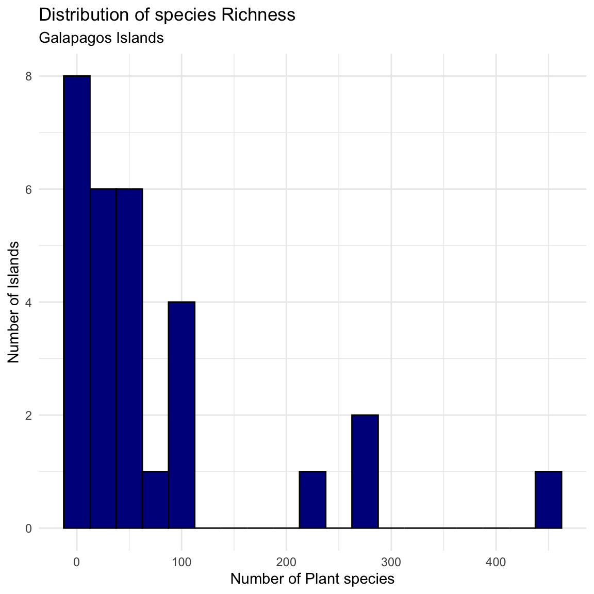
Data graphically as size categories
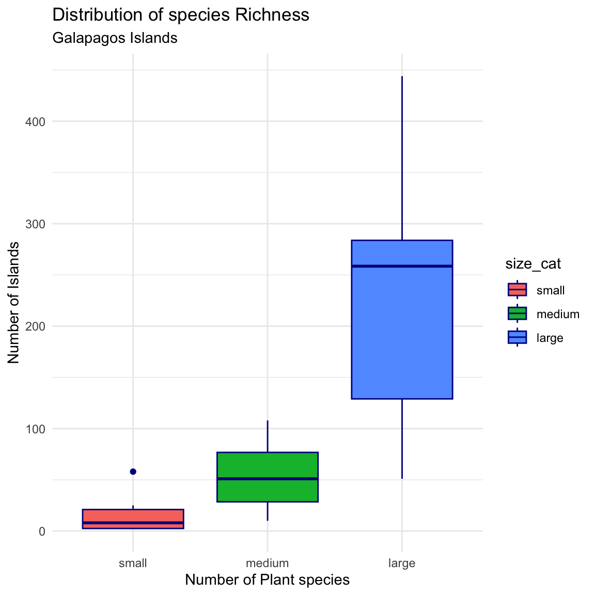
GLM with Gaussian (Normal) Distribution: Setup
The simplest form of GLM uses a normal (Gaussian) distribution with an identity link function. This is equivalent to standard linear model
Let’s compare a standard linear model and a Gaussian GLM using the Galapagos dataset, modeling endemic species richness by island size category.
Linear model the old way
Call:
lm(formula = endemics ~ size_cat, data = g_df)
Residuals:
Min 1Q Median 3Q Max
-39.000 -4.636 -0.667 6.333 33.000
Coefficients:
Estimate Std. Error t value Pr(>|t|)
(Intercept) 5.636 4.236 1.331 0.1948
size_catmedium 16.030 5.864 2.734 0.0111 *
size_catlarge 56.364 7.130 7.905 0.0000000221 ***
---
Signif. codes: 0 '***' 0.001 '**' 0.01 '*' 0.05 '.' 0.1 ' ' 1
Residual standard error: 14.05 on 26 degrees of freedom
Multiple R-squared: 0.708, Adjusted R-squared: 0.6855
F-statistic: 31.51 on 2 and 26 DF, p-value: 0.0000001124The ANOVA model
Anova Table (Type III tests)
Response: endemics
Sum Sq Df F value Pr(>F)
(Intercept) 349.5 1 1.7707 0.1948
size_cat 12438.6 2 31.5135 0.0000001124 ***
Residuals 5131.2 26
---
Signif. codes: 0 '***' 0.001 '**' 0.01 '*' 0.05 '.' 0.1 ' ' 1The Gaussian GLM model
Call:
glm(formula = endemics ~ size_cat, family = gaussian(link = "identity"),
data = g_df)
Coefficients:
Estimate Std. Error t value Pr(>|t|)
(Intercept) 5.636 4.236 1.331 0.1948
size_catmedium 16.030 5.864 2.734 0.0111 *
size_catlarge 56.364 7.130 7.905 0.0000000221 ***
---
Signif. codes: 0 '***' 0.001 '**' 0.01 '*' 0.05 '.' 0.1 ' ' 1
(Dispersion parameter for gaussian family taken to be 197.3543)
Null deviance: 17569.9 on 28 degrees of freedom
Residual deviance: 5131.2 on 26 degrees of freedom
AIC: 240.4
Number of Fisher Scoring iterations: 2GLM ANOVA
Analysis of Deviance Table (Type III tests)
Response: endemics
Error estimate based on Pearson residuals
Sum Sq Df F values Pr(>F)
size_cat 12438.6 2 31.514 0.0000001124 ***
Residuals 5131.2 26
---
Signif. codes: 0 '***' 0.001 '**' 0.01 '*' 0.05 '.' 0.1 ' ' 1Assumption Tests of Both Models
Linear model assumptions

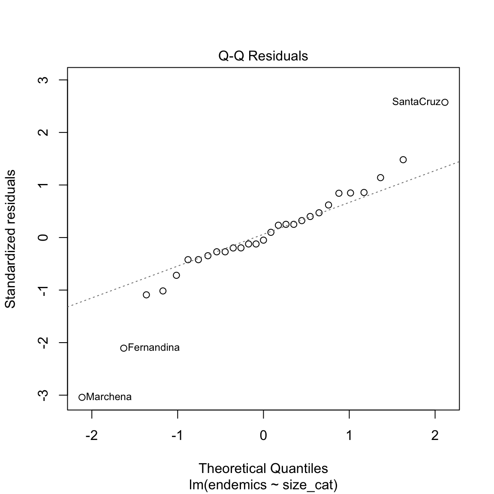

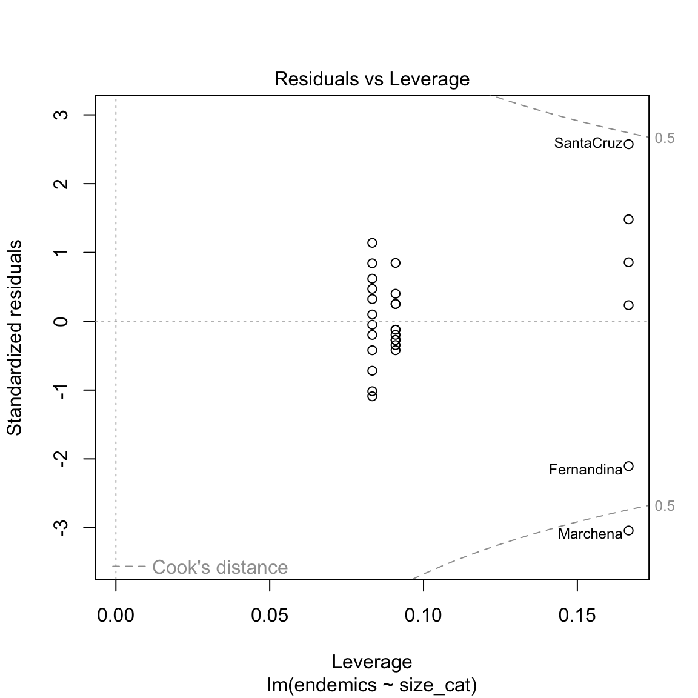
GLM ASSUMPTIONS


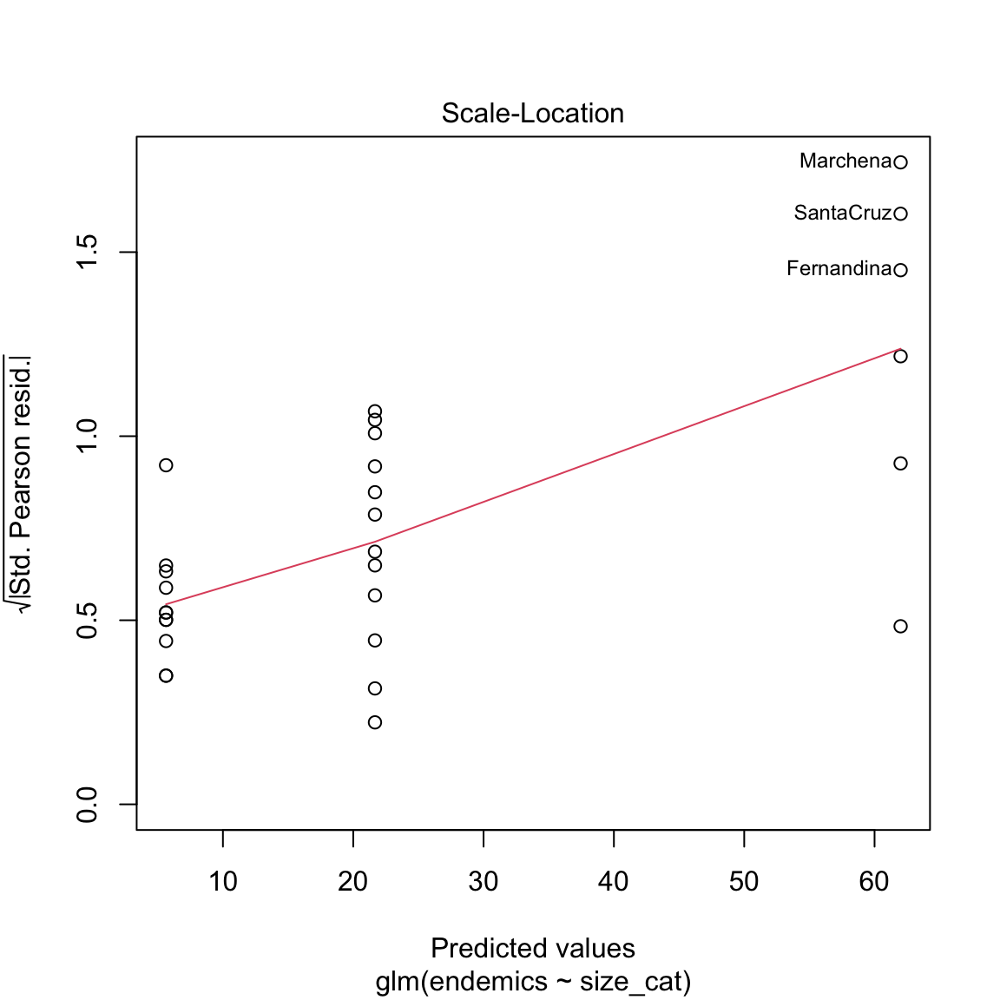
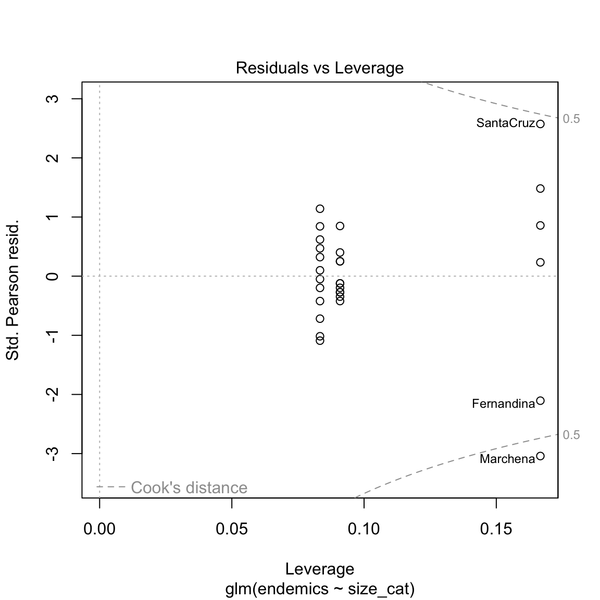
Shapiro Wilk Test Linear Model
Shapiro-Wilk normality test
data: residuals(lm_model)
W = 0.94396, p-value = 0.1273Shapiro Test Gaussian Model
Shapiro-Wilk normality test
data: residuals(gauss_model)
W = 0.94396, p-value = 0.1273Levenes Test - this is why a Poisson Model fits
Levene's Test for Homogeneity of Variance (center = median)
Df F value Pr(>F)
group 2 7.9881 0.001975 **
26
---
Signif. codes: 0 '***' 0.001 '**' 0.01 '*' 0.05 '.' 0.1 ' ' 1Dharma Assumption Test
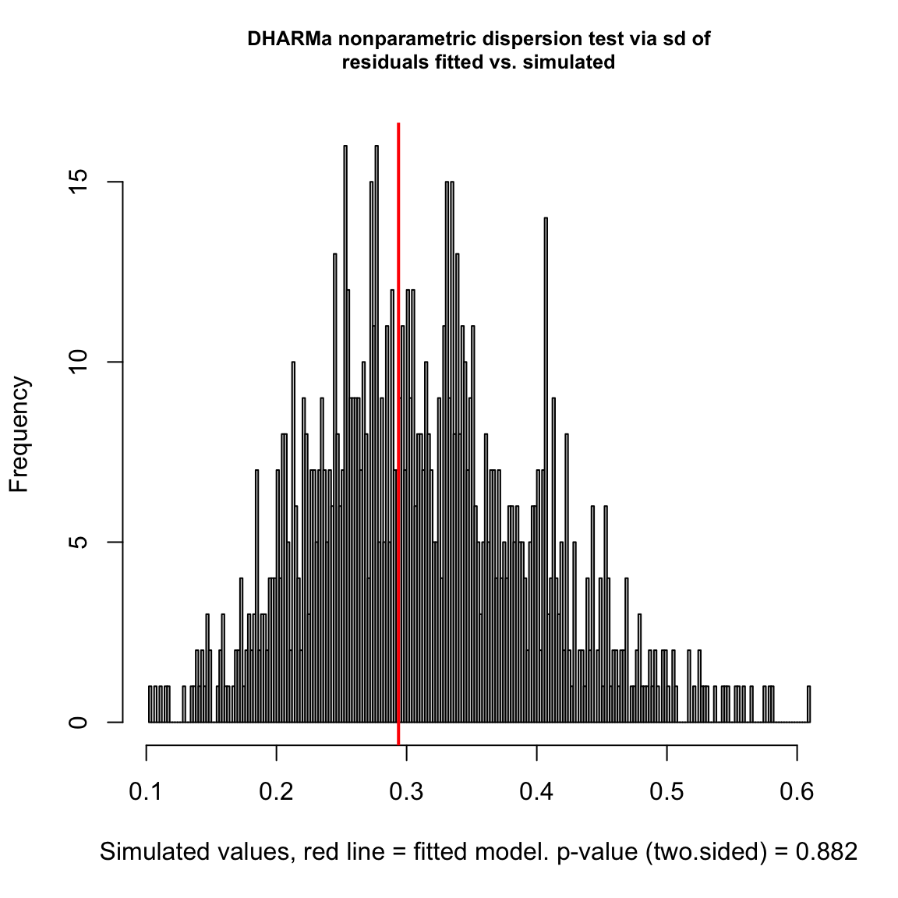
DHARMa nonparametric dispersion test via sd of residuals fitted vs.
simulated
data: simulationOutput
dispersion = 0.93779, p-value = 0.882
alternative hypothesis: two.sided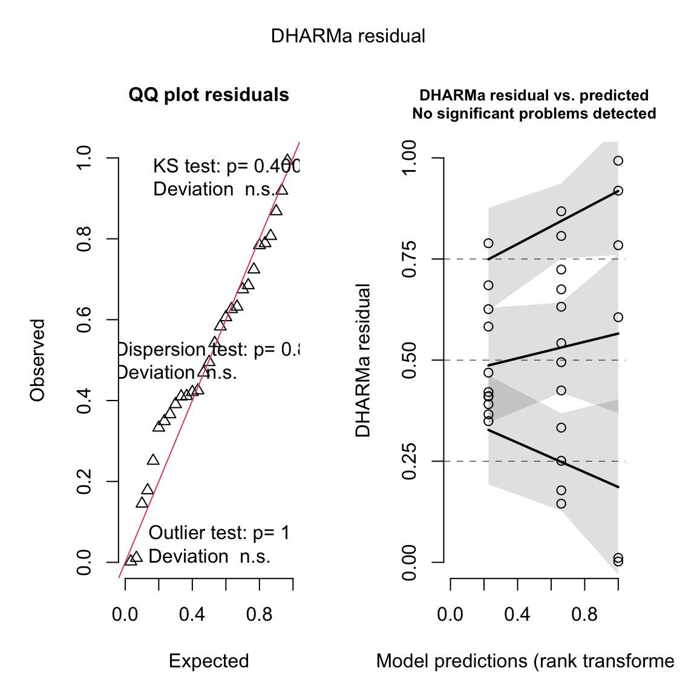
Emmeans Linear Model
size_cat emmean SE df lower.CL upper.CL
small 5.64 4.24 26 -3.07 14.3
medium 21.67 4.06 26 13.33 30.0
large 62.00 5.74 26 50.21 73.8
Confidence level used: 0.95 Emmeans GLM Mode
size_cat emmean SE df lower.CL upper.CL
small 5.64 4.24 26 -3.07 14.3
medium 21.67 4.06 26 13.33 30.0
large 62.00 5.74 26 50.21 73.8
Confidence level used: 0.95 Pairs LM
contrast estimate SE df t.ratio p.value
small - medium -16.0 5.86 26 -2.734 0.0330
small - large -56.4 7.13 26 -7.905 <0.0001
medium - large -40.3 7.02 26 -5.742 <0.0001
P value adjustment: sidak method for 3 tests Pairs GLM
contrast estimate SE df t.ratio p.value
small - medium -16.0 5.86 26 -2.734 0.0330
small - large -56.4 7.13 26 -7.905 <0.0001
medium - large -40.3 7.02 26 -5.742 <0.0001
P value adjustment: sidak method for 3 tests Plot of GLM
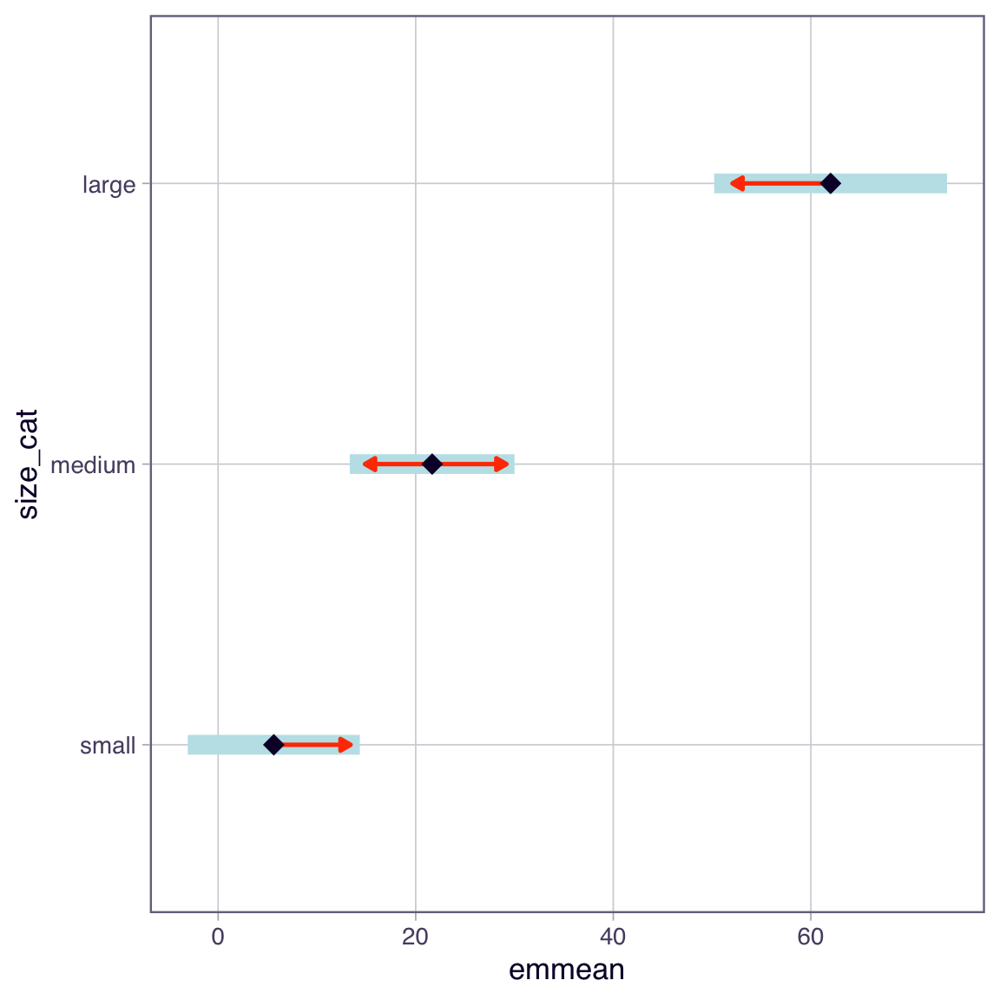
GLM ANOVA with Poisson Distribution
- Poisson GLMs Poisson model used when response variable is count data:
- Number of species on an island
- Number of parasites in a host
- Number of bird nests in a plot
- Number of seeds produced by a plant
- The Poisson distribution assumes:
- Counts are non-negative integers (0, 1, 2, 3, …)
- The mean equals the variance
- Events occur independently
- Key consideration: If variance > mean (overdispersion), consider negative binomial regression instead.
- Now let’s fit a Poisson GLM to model the relationship between the rounded quarter-mile time and the number of cylinders:
Fit Poisson GLM with size_cat as predictor
Call:
glm(formula = spp ~ size_cat, family = poisson(link = "log"),
data = g_df)
Coefficients:
Estimate Std. Error z value Pr(>|z|)
(Intercept) 2.67101 0.07930 33.68 <0.0000000000000002 ***
size_catmedium 1.33784 0.08833 15.15 <0.0000000000000002 ***
size_catlarge 2.77429 0.08372 33.14 <0.0000000000000002 ***
---
Signif. codes: 0 '***' 0.001 '**' 0.01 '*' 0.05 '.' 0.1 ' ' 1
(Dispersion parameter for poisson family taken to be 1)
Null deviance: 3031.18 on 28 degrees of freedom
Residual deviance: 898.03 on 26 degrees of freedom
AIC: 1057.2
Number of Fisher Scoring iterations: 5GLM with Poisson Distribution: Setup
Does island size category, as a whole, have a statistically significant effect on the number of plant species?
test = "LR": important part!- normal ANOVA (with a Gaussian/normal distribution) test is an F-test.
- GLM (like Poisson) can’t use F-test in the same way
- use a Likelihood Ratio (LR) test
- LR test statistically compares fit of full model (the one with size_cat) to simpler null model (one without size_cat)
- LR test tells us if it is significant
Let’s check for overdispersion, which is common in count data:
Should be close to 1 for a well-fitting Poisson model
If > 1.5, may indicate overdispersion
- What is Underdispersion?
- In a Poisson model, we expect the variance to equal the mean. The dispersion parameter measures the ratio of observed variance to expected variance:
- Dispersion ≈ 1: Good fit (variance = mean, as Poisson assumes)
- Dispersion > 1: Overdispersion (variance > mean)
- Dispersion < 1: Underdispersion (variance < mean)
- In a Poisson model, we expect the variance to equal the mean. The dispersion parameter measures the ratio of observed variance to expected variance:
- a dispersion parameter this large is a warning
- our data more variable than a Poisson model expects
- use a Negative Binomial model
- What is Underdispersion?
# Overdispersion test
dispersion ratio = 33.525
Pearson's Chi-Squared = 871.642
p-value = < 0.001DHARMA assumption plots
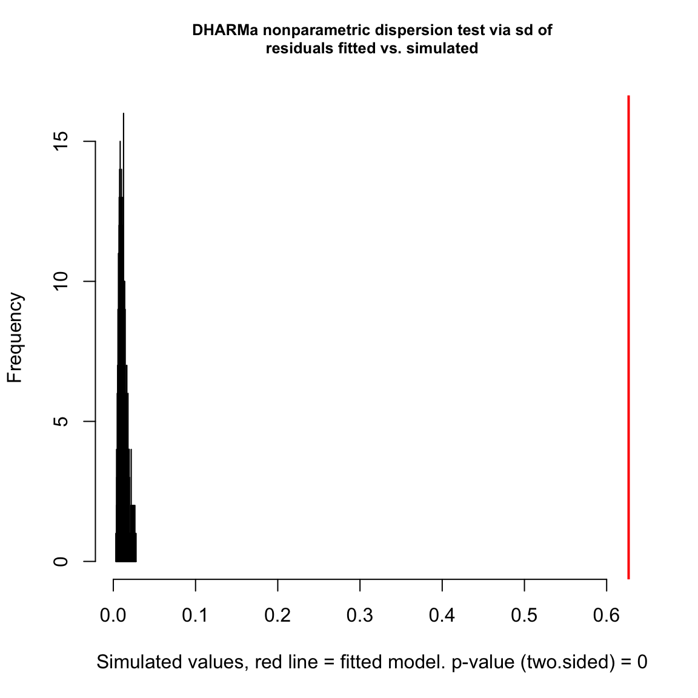
DHARMa nonparametric dispersion test via sd of residuals fitted vs.
simulated
data: simulationOutput
dispersion = 55.559, p-value < 0.00000000000000022
alternative hypothesis: two.sided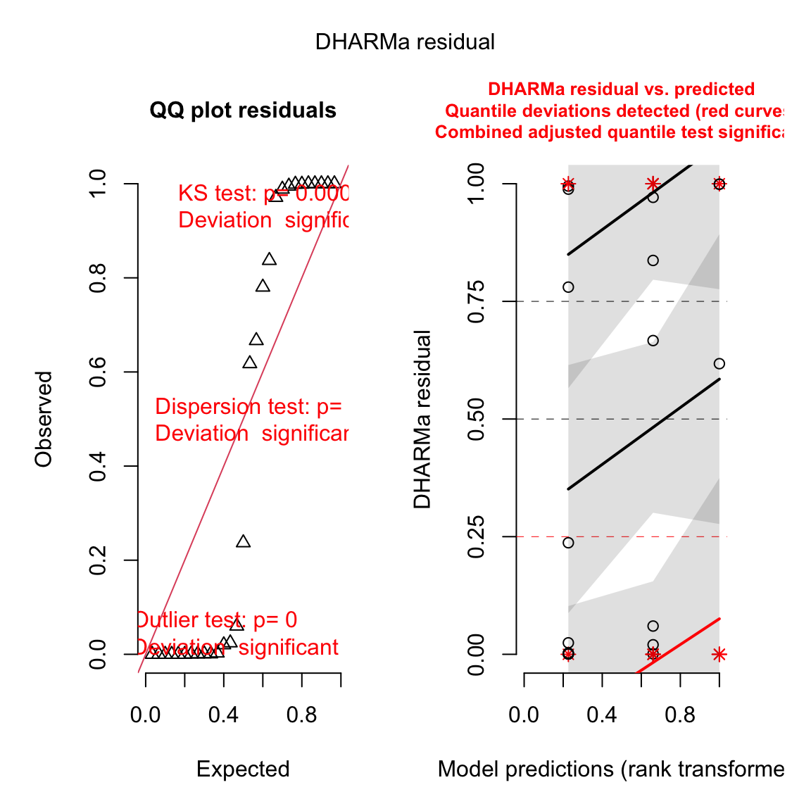
WHY DOES THE SHAPIRO TEST NOT WORK???
this you should consider - well it shouldn’t but it does this time . dang it…
Shapiro-Wilk normality test
data: residuals(poiss_model)
W = 0.98973, p-value = 0.9909Poisson GLM Emmeans
size_cat rate SE df asymp.LCL asymp.UCL
small 14.5 1.15 Inf 12.4 16.9
medium 55.1 2.14 Inf 51.0 59.4
large 231.7 6.21 Inf 219.8 244.2
Confidence level used: 0.95
Intervals are back-transformed from the log scale POISSON GLM Pairs Plots
contrast ratio SE df null z.ratio p.value
small / medium 0.2624 0.02320 Inf 1 -15.146 <0.0001
small / large 0.0624 0.00522 Inf 1 -33.139 <0.0001
medium / large 0.2378 0.01120 Inf 1 -30.403 <0.0001
P value adjustment: tukey method for comparing a family of 3 estimates
Tests are performed on the log scale size_cat rate SE df asymp.LCL asymp.UCL .group
small 14.5 1.15 Inf 12.4 16.9 a
medium 55.1 2.14 Inf 51.0 59.4 b
large 231.7 6.21 Inf 219.8 244.2 c
Confidence level used: 0.95
Intervals are back-transformed from the log scale
P value adjustment: tukey method for comparing a family of 3 estimates
Tests are performed on the log scale
significance level used: alpha = 0.05
NOTE: If two or more means share the same grouping symbol,
then we cannot show them to be different.
But we also did not show them to be the same. Poisson GLM Plot
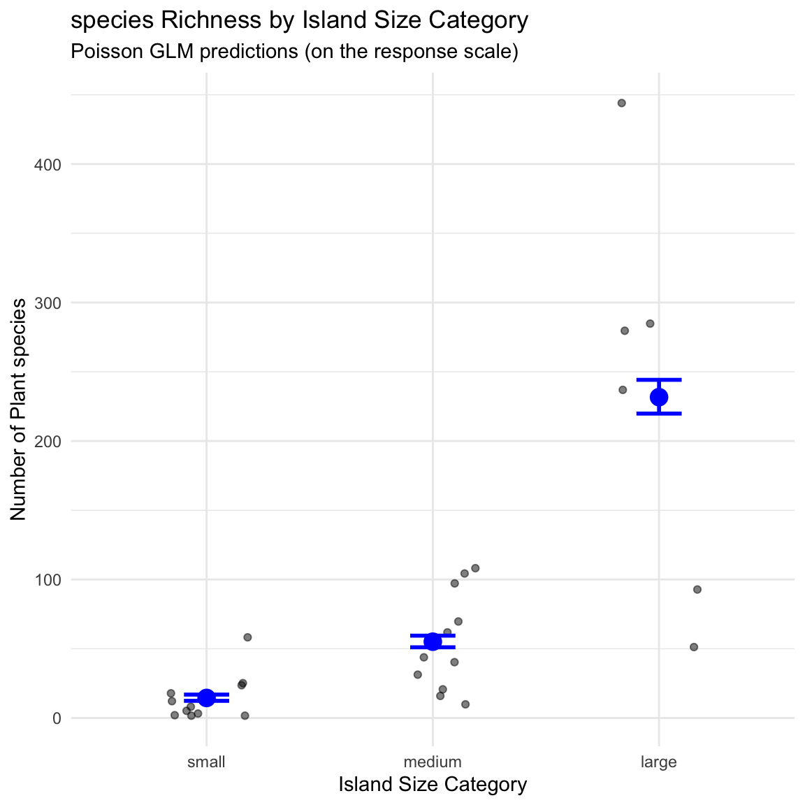
Negative Binomial GLM ANOVA
- Dealing with Overdispersion in Count Data
- count data shows more variability than expected under a Poisson distribution (variance > mean
- need to use negative binomial model
model_nb <- glm.nb(qsec_round ~ cyl, data = mtcars_count)
- negative binomial model includes a dispersion parameter (theta)
- allows the variance to be larger than the mean
- standard errors bigger because NB model accounts for high variability (overdispersion)
- estimates dispersion parameter ‘Theta’ (or 1/theta)
- how it models the overdispersion.
Call:
glm.nb(formula = spp ~ size_cat, data = g_df, init.theta = 1.660219232,
link = log)
Coefficients:
Estimate Std. Error z value Pr(>|z|)
(Intercept) 2.6710 0.2471 10.810 < 0.0000000000000002 ***
size_catmedium 1.3378 0.3358 3.984 0.0000677150798 ***
size_catlarge 2.7743 0.4027 6.889 0.0000000000056 ***
---
Signif. codes: 0 '***' 0.001 '**' 0.01 '*' 0.05 '.' 0.1 ' ' 1
(Dispersion parameter for Negative Binomial(1.6602) family taken to be 1)
Null deviance: 81.681 on 28 degrees of freedom
Residual deviance: 31.824 on 26 degrees of freedom
AIC: 283.97
Number of Fisher Scoring iterations: 1
Theta: 1.660
Std. Err.: 0.442
2 x log-likelihood: -275.972 Assumptions
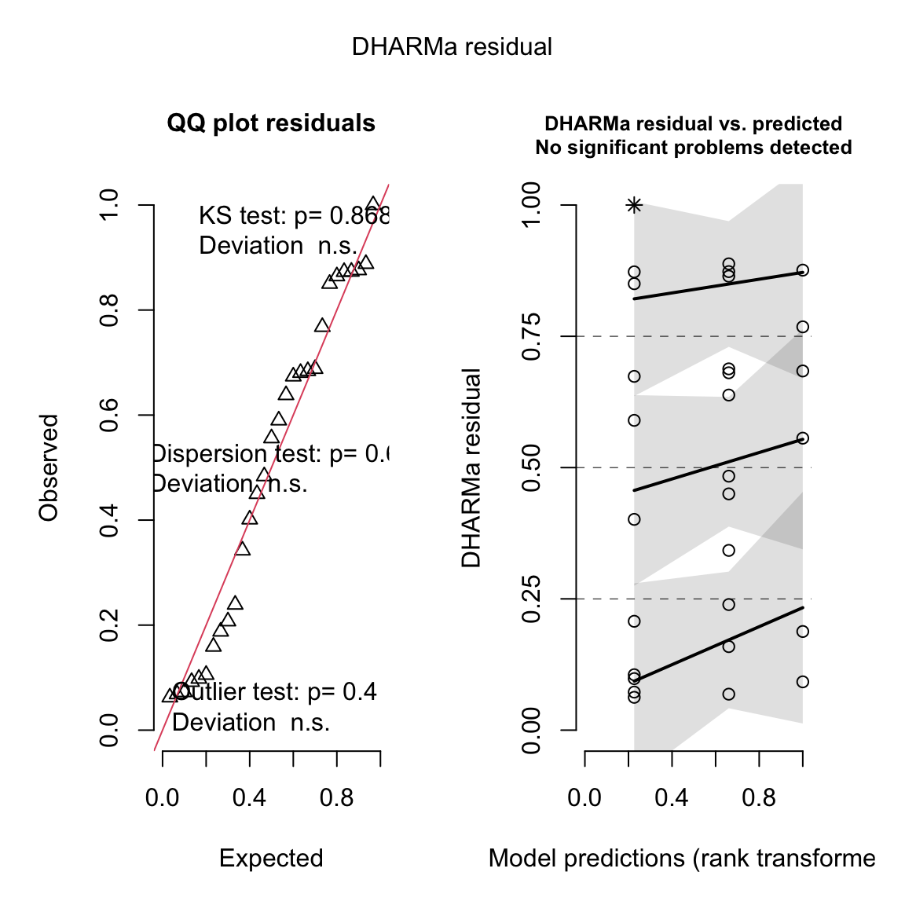
Note Shapiro test does not work
Shapiro-Wilk normality test
data: residuals(nb_model)
W = 0.94501, p-value = 0.1357Overdispersion
# Overdispersion test (using simulated residuals)
dispersion ratio = 0.586
p-value = 0.632ANOVA GLM Negative Binmial
Analysis of Deviance Table (Type III tests)
Response: spp
LR Chisq Df Pr(>Chisq)
size_cat 49.858 2 0.00000000001491 ***
---
Signif. codes: 0 '***' 0.001 '**' 0.01 '*' 0.05 '.' 0.1 ' ' 1 size_cat response SE df asymp.LCL asymp.UCL
small 14.5 3.57 Inf 8.91 23.5
medium 55.1 12.50 Inf 35.27 86.0
large 231.7 73.70 Inf 124.22 432.0
Confidence level used: 0.95
Intervals are back-transformed from the log scale Pairwise
contrast ratio SE df null z.ratio p.value
small / medium 0.2624 0.0881 Inf 1 -3.984 0.0002
small / large 0.0624 0.0251 Inf 1 -6.889 <0.0001
medium / large 0.2378 0.0929 Inf 1 -3.675 0.0007
P value adjustment: tukey method for comparing a family of 3 estimates
Tests are performed on the log scale size_cat response SE df asymp.LCL asymp.UCL .group
small 14.5 3.57 Inf 8.91 23.5 a
medium 55.1 12.50 Inf 35.27 86.0 b
large 231.7 73.70 Inf 124.22 432.0 c
Confidence level used: 0.95
Intervals are back-transformed from the log scale
P value adjustment: tukey method for comparing a family of 3 estimates
Tests are performed on the log scale
significance level used: alpha = 0.05
NOTE: If two or more means share the same grouping symbol,
then we cannot show them to be different.
But we also did not show them to be the same. REGRESSIONS——
Generalized Linear Models (GLMs) extend linear models to handle different types of response variables:
- Normal distribution: Continuous data (like regular ANOVA/regression)
- Poisson distribution: Count data
- Binomial distribution: Binary data (presence/absence, success/failure)
- Gamma distribution: Positive continuous data
- Negative binomial: Overdispersed count data
Gaussian GLM (equivalent to simple linear regression)
The simplest form of GLM uses a normal (Gaussian) distribution with an identity link function. This is equivalent to a standard linear regression.
Let’s compare a standard linear model and a Gaussian GLM.
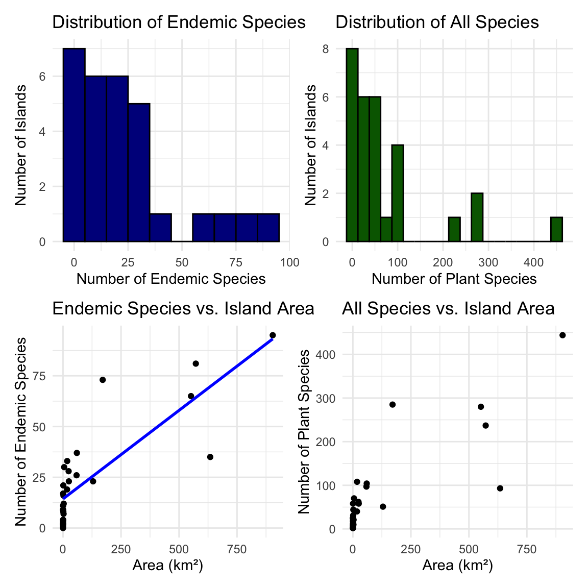
GLM with Gaussian (Normal) Distribution: Setup
We will model the continuous endemics variable as a function of the continuous area variable. This is a simple linear regression. We compare the lm() function with the glm() function using family = gaussian.
The linear model summary
Call:
lm(formula = endemics ~ area, data = g_df)
Residuals:
Min 1Q Median 3Q Max
-34.690 -10.366 -2.612 6.528 43.733
Coefficients:
Estimate Std. Error t value Pr(>|t|)
(Intercept) 14.36338 2.99342 4.798 0.0000523735 ***
area 0.08720 0.01168 7.468 0.0000000493 ***
---
Signif. codes: 0 '***' 0.001 '**' 0.01 '*' 0.05 '.' 0.1 ' ' 1
Residual standard error: 14.57 on 27 degrees of freedom
Multiple R-squared: 0.6738, Adjusted R-squared: 0.6617
F-statistic: 55.77 on 1 and 27 DF, p-value: 0.00000004929The ANOVA model
This table gives the F-statistic for the overall model, which in a simple linear regression, tests the same hypothesis as the t-test for the area slope.
Anova Table (Type III tests)
Response: endemics
Sum Sq Df F value Pr(>F)
(Intercept) 4887.1 1 23.024 0.00005237345 ***
area 11838.8 1 55.775 0.00000004929 ***
Residuals 5731.0 27
---
Signif. codes: 0 '***' 0.001 '**' 0.01 '*' 0.05 '.' 0.1 ' ' 1The Gaussian GLM model
Note the estimates and p-values are identical to the lm() output.
Call:
glm(formula = endemics ~ area, family = gaussian(link = "identity"),
data = g_df)
Coefficients:
Estimate Std. Error t value Pr(>|t|)
(Intercept) 14.36338 2.99342 4.798 0.0000523735 ***
area 0.08720 0.01168 7.468 0.0000000493 ***
---
Signif. codes: 0 '***' 0.001 '**' 0.01 '*' 0.05 '.' 0.1 ' ' 1
(Dispersion parameter for gaussian family taken to be 212.261)
Null deviance: 17570 on 28 degrees of freedom
Residual deviance: 5731 on 27 degrees of freedom
AIC: 241.6
Number of Fisher Scoring iterations: 2GLM ANOVA
Again, this F-test is identical to the one from the lm() model.
Analysis of Deviance Table (Type III tests)
Response: endemics
Error estimate based on Pearson residuals
Sum Sq Df F values Pr(>F)
area 11839 1 55.775 0.00000004929 ***
Residuals 5731 27
---
Signif. codes: 0 '***' 0.001 '**' 0.01 '*' 0.05 '.' 0.1 ' ' 1Assumption Tests of Both Models
The diagnostic plots for lm_model and gauss_model will be identical.
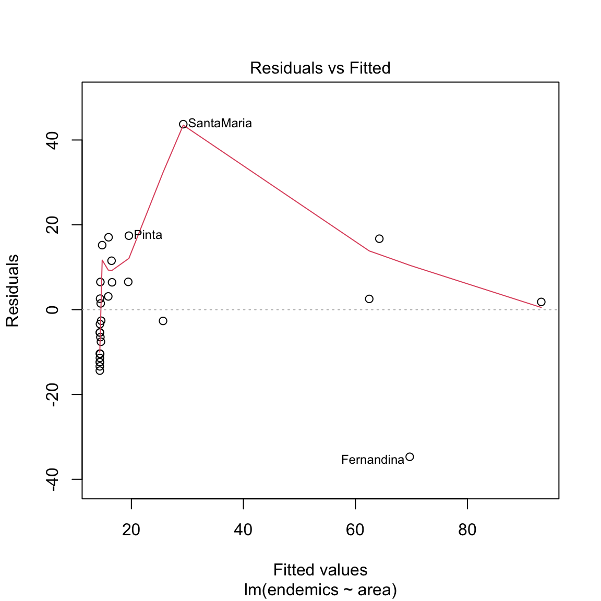


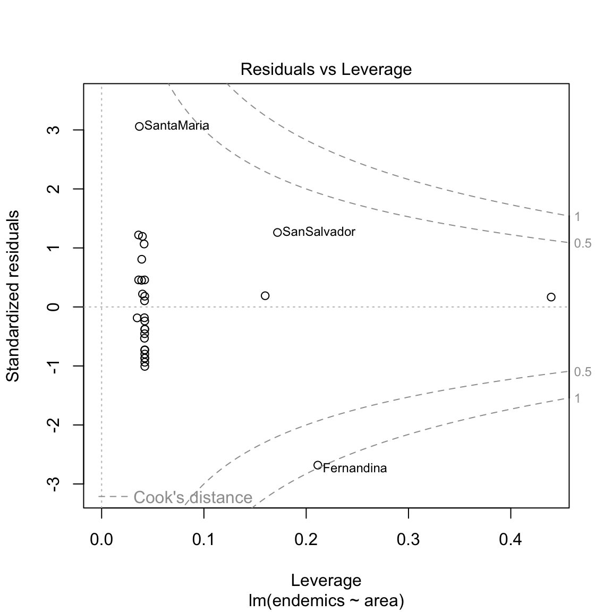
Shapiro-Wilk Test (Normality of Residuals)
Shapiro-Wilk normality test
data: residuals(lm_reg_model)
W = 0.93735, p-value = 0.08547
Shapiro-Wilk normality test
data: residuals(gauss_reg_model)
W = 0.93735, p-value = 0.08547GLM Regression with Poisson Distribution
- Poisson GLMs are used when the response variable is count data.
- We will now model the total number of species (spp) as a function of island area.
- The Poisson distribution assumes the mean equals the variance.
- Key consideration: If variance > mean (overdispersion), we should use a negative binomial model instead.
- Fit Poisson GLM with area as predictor
Call:
glm(formula = spp ~ area, family = poisson(link = "log"), data = g_df)
Coefficients:
Estimate Std. Error z value Pr(>|z|)
(Intercept) 3.73721483 0.03022162 123.66 <0.0000000000000002 ***
area 0.00269318 0.00005759 46.76 <0.0000000000000002 ***
---
Signif. codes: 0 '***' 0.001 '**' 0.01 '*' 0.05 '.' 0.1 ' ' 1
(Dispersion parameter for poisson family taken to be 1)
Null deviance: 3031.2 on 28 degrees of freedom
Residual deviance: 1229.5 on 27 degrees of freedom
AIC: 1386.6
Number of Fisher Scoring iterations: 5GLM with Poisson Distribution: ANOVA
Does island area, as a whole, have a statistically significant effect on the number of plant species? We use a Likelihood Ratio (LR) test.
Analysis of Deviance Table (Type III tests)
Response: spp
LR Chisq Df Pr(>Chisq)
area 1801.7 1 < 0.00000000000000022 ***
---
Signif. codes: 0 '***' 0.001 '**' 0.01 '*' 0.05 '.' 0.1 ' ' 1# Overdispersion test
dispersion ratio = 52.256
Pearson's Chi-Squared = 1410.899
p-value = < 0.001DHARMa Residual Diagnostics
We can use the DHARMa package to check model assumptions. The Q-Q plot clearly shows the model fits poorly.
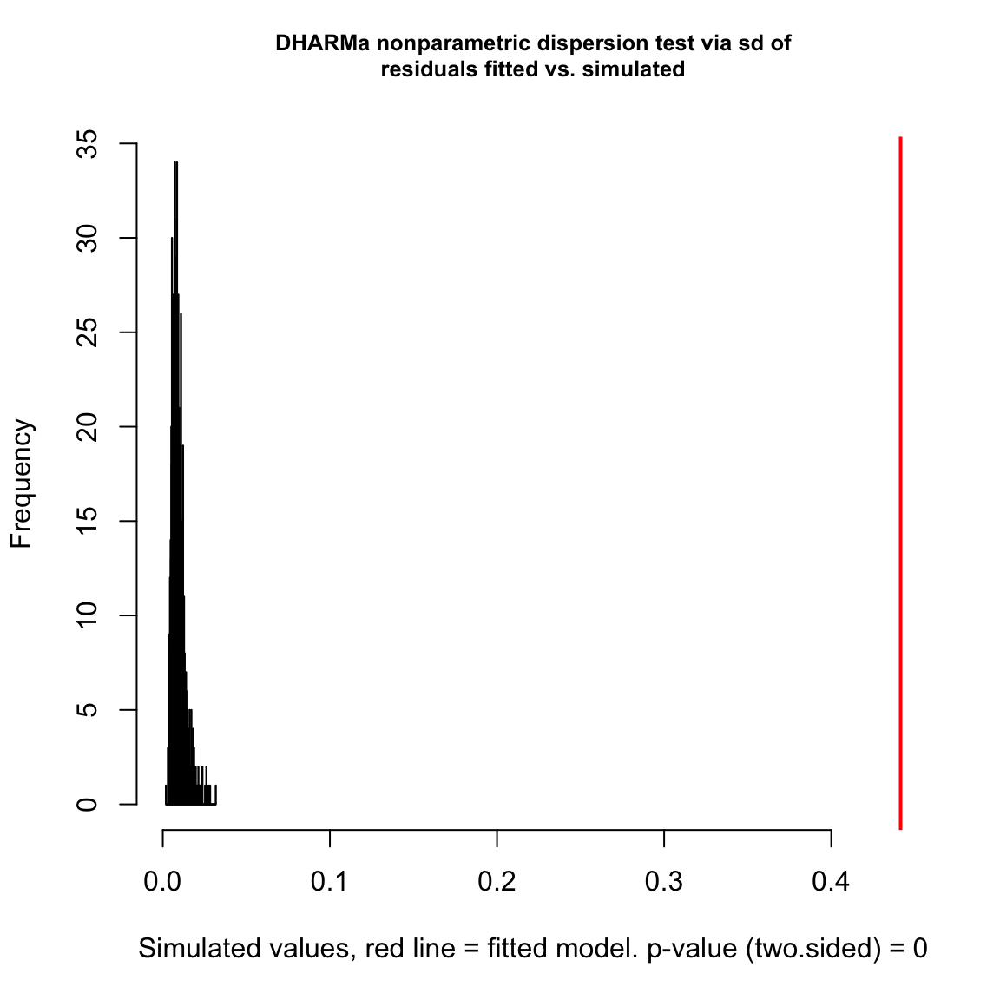
DHARMa nonparametric dispersion test via sd of residuals fitted vs.
simulated
data: simulationOutput
dispersion = 48.199, p-value < 0.00000000000000022
alternative hypothesis: two.sided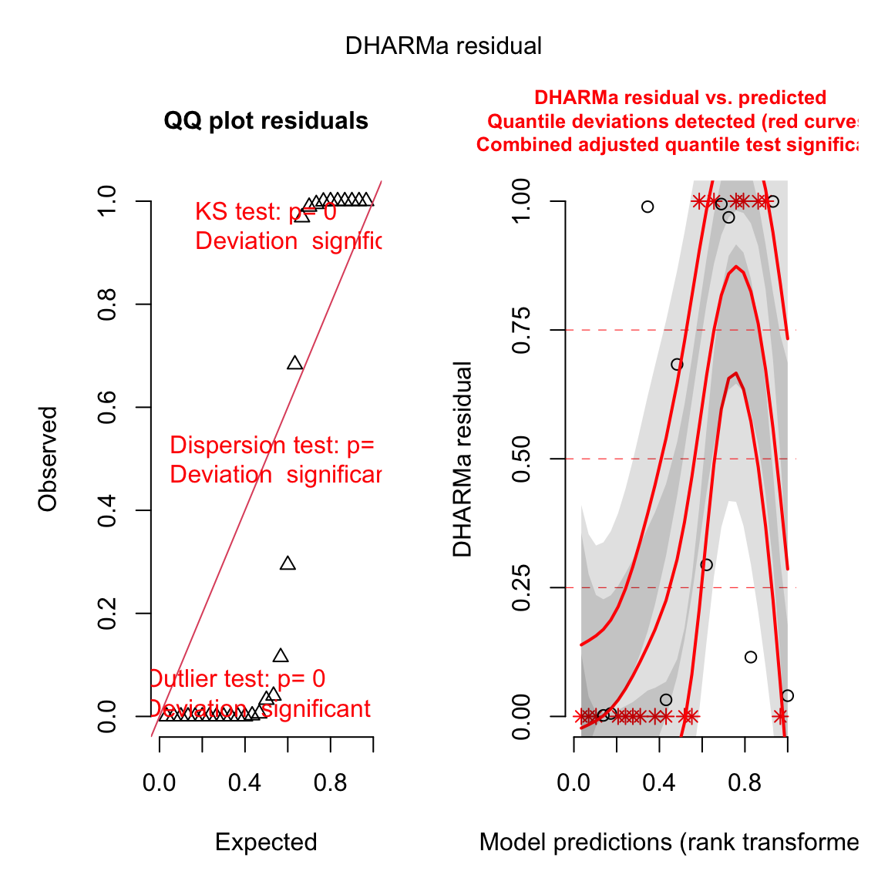
Plotting the Poisson Regression
Even though the model is a poor fit, we can visualize its prediction.
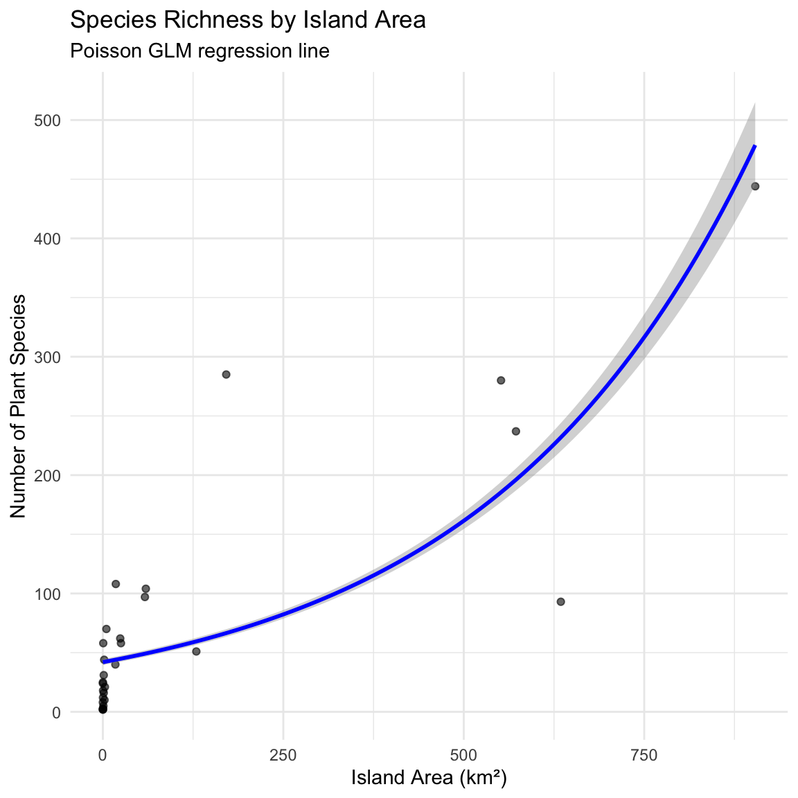
Negative Binomial GLM Regression
Used to handle overdispersed count data.
The negative binomial model includes a dispersion parameter (theta) to account for the variance being larger than the mean.
Call:
glm.nb(formula = spp ~ area, data = g_df, init.theta = 1.098629663,
link = log)
Coefficients:
Estimate Std. Error z value Pr(>|z|)
(Intercept) 3.6082304 0.1987610 18.15 < 0.0000000000000002 ***
area 0.0033531 0.0007672 4.37 0.0000124 ***
---
Signif. codes: 0 '***' 0.001 '**' 0.01 '*' 0.05 '.' 0.1 ' ' 1
(Dispersion parameter for Negative Binomial(1.0986) family taken to be 1)
Null deviance: 55.178 on 28 degrees of freedom
Residual deviance: 32.695 on 27 degrees of freedom
AIC: 295.08
Number of Fisher Scoring iterations: 1
Theta: 1.099
Std. Err.: 0.271
2 x log-likelihood: -289.083 NB Assumption Diagnostics (DHARMa)
The DHARMa residual plot looks much better. The Q-Q plot is nearly on the line, and the residual vs. predicted plot shows no strong pattern.
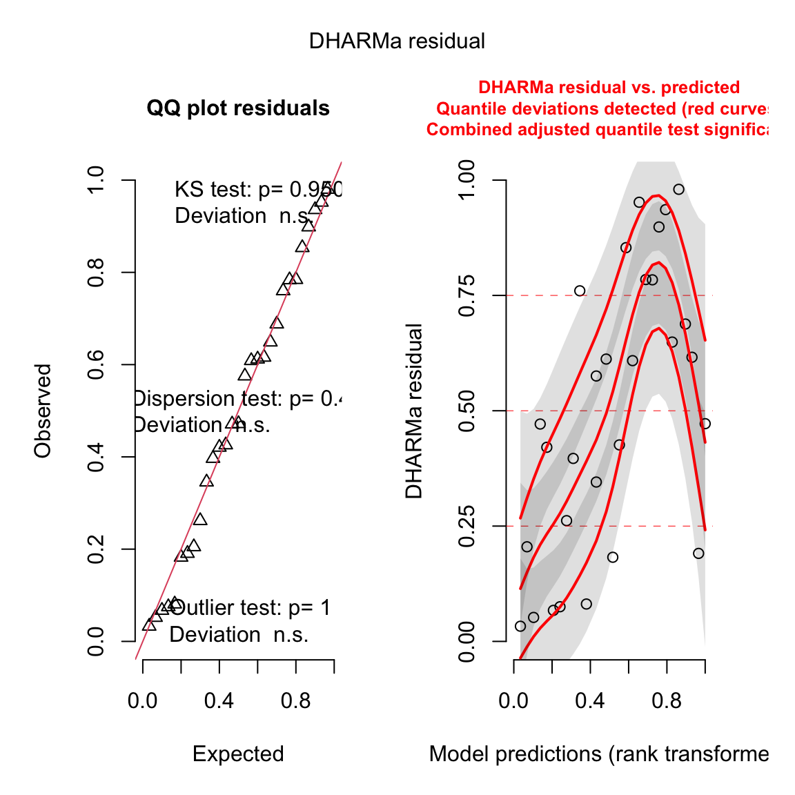
Overdispersion Check
The check_overdispersion test on the DHARMa residuals shows no remaining overdispersion (p = 0.816). This model successfully handled the issue.
DHARMa nonparametric dispersion test via sd of residuals fitted vs.
simulated
data: simulationOutput
dispersion = 0.27162, p-value = 0.488
alternative hypothesis: two.sided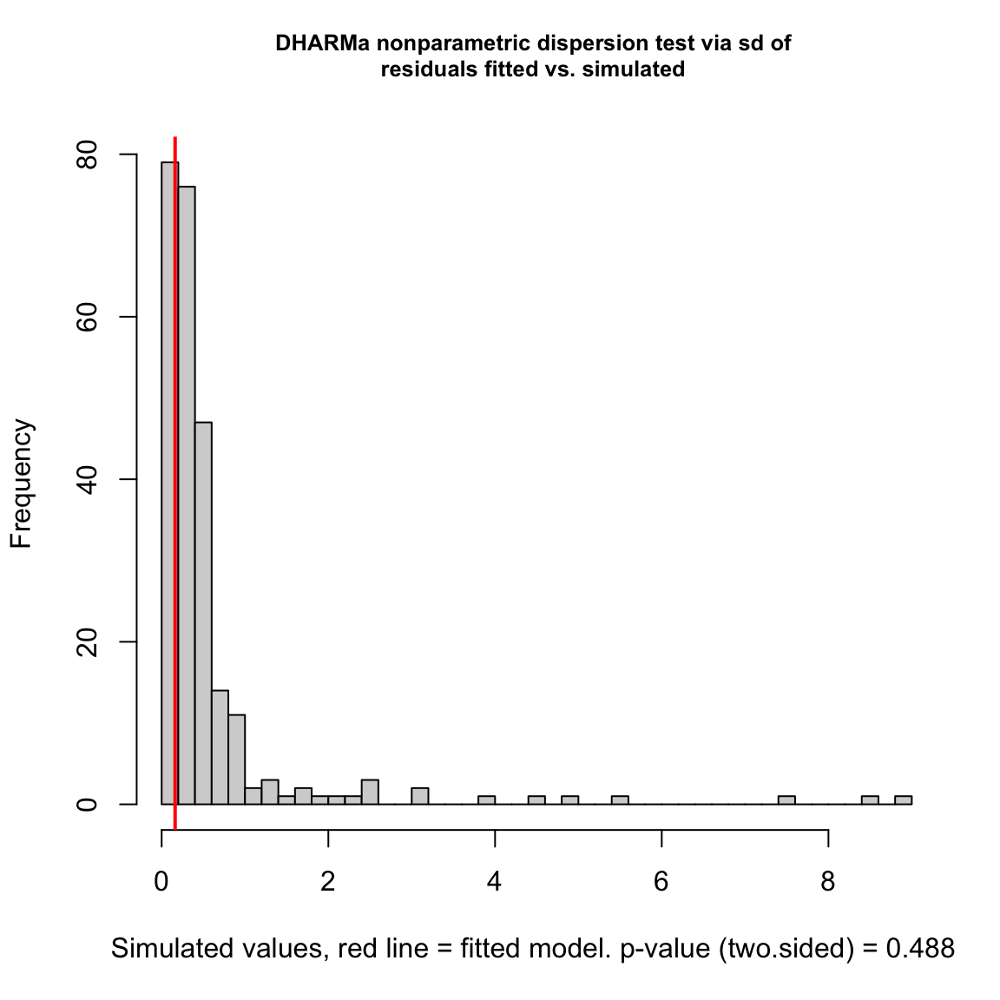
ANOVA GLM Negative Binomial
We again use a Likelihood Ratio (LR) test to get the overall p-value for the area predictor.
Analysis of Deviance Table (Type III tests)
Response: spp
LR Chisq Df Pr(>Chisq)
size_cat 49.858 2 0.00000000001491 ***
---
Signif. codes: 0 '***' 0.001 '**' 0.01 '*' 0.05 '.' 0.1 ' ' 1Plotting the Negative Binomial Regression
This plot shows the fitted line from our final, best-fitting model.
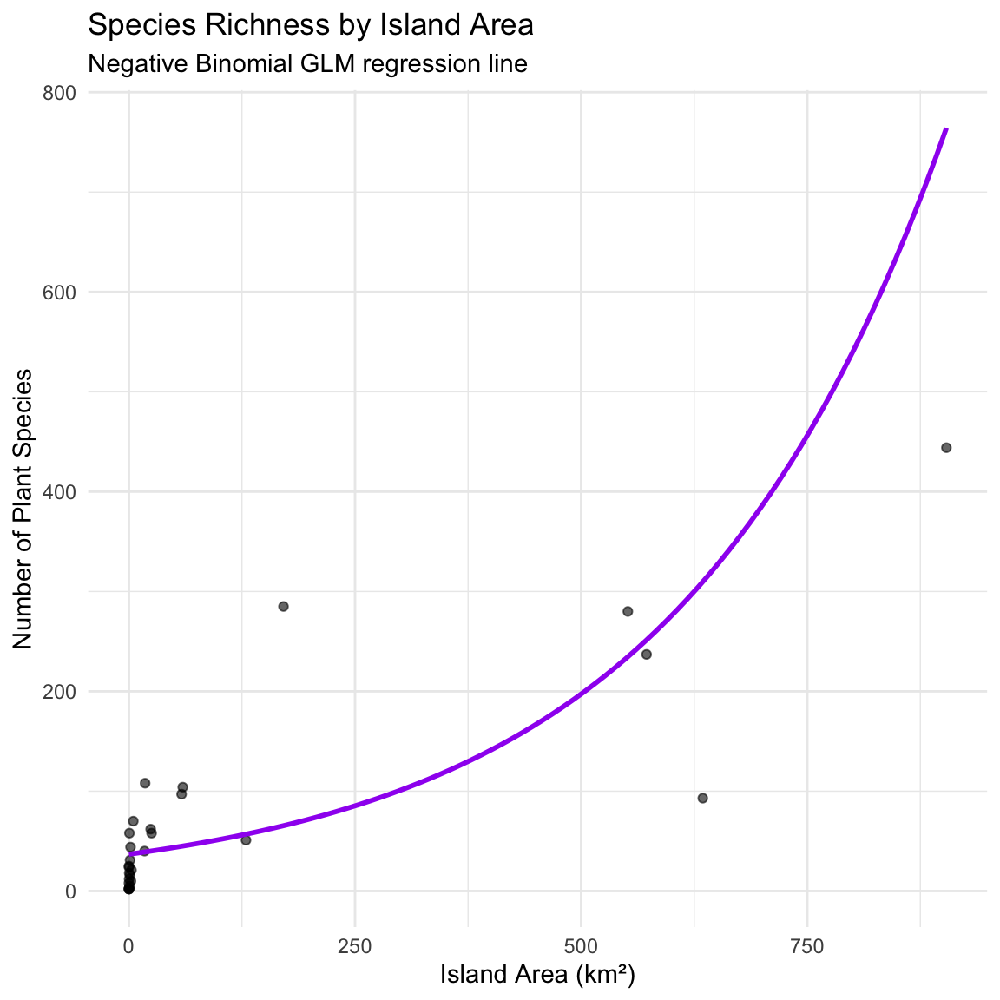
Logistic Regression
Logistic regression is a GLM used when the response variable is binary (e.g., dead/alive, present/absent). It models the probability of the response being “1” (success) given predictor values.
Let’s examine the simple logistic regression model:
\[\pi(x) = \frac{e^{\beta_0 + \beta_1 x}}{1 + e^{\beta_0 + \beta_1 x}}\]
- Where:
- \(\pi(x)\) is the probability that Y = 1 given X = x
- \(\beta_0\) is the intercept
- \(\beta_1\) is the slope (rate of change in \(\pi(x)\) for a unit change in X)
To linearize this relationship, we use the logit link function:
\[g(x) = \log\left(\frac{\pi(x)}{1-\pi(x)}\right) = \beta_0 + \beta_1 x\]
This transforms the probability (which is bounded between 0 and 1) to a linear function that can range from -∞ to +∞.
Example: Lizard Presence on Islands
Based on the example from Polis et al. (1998), we’ll model the presence/absence of lizards (Uta) on islands in the Gulf of California based on perimeter/area ratio.
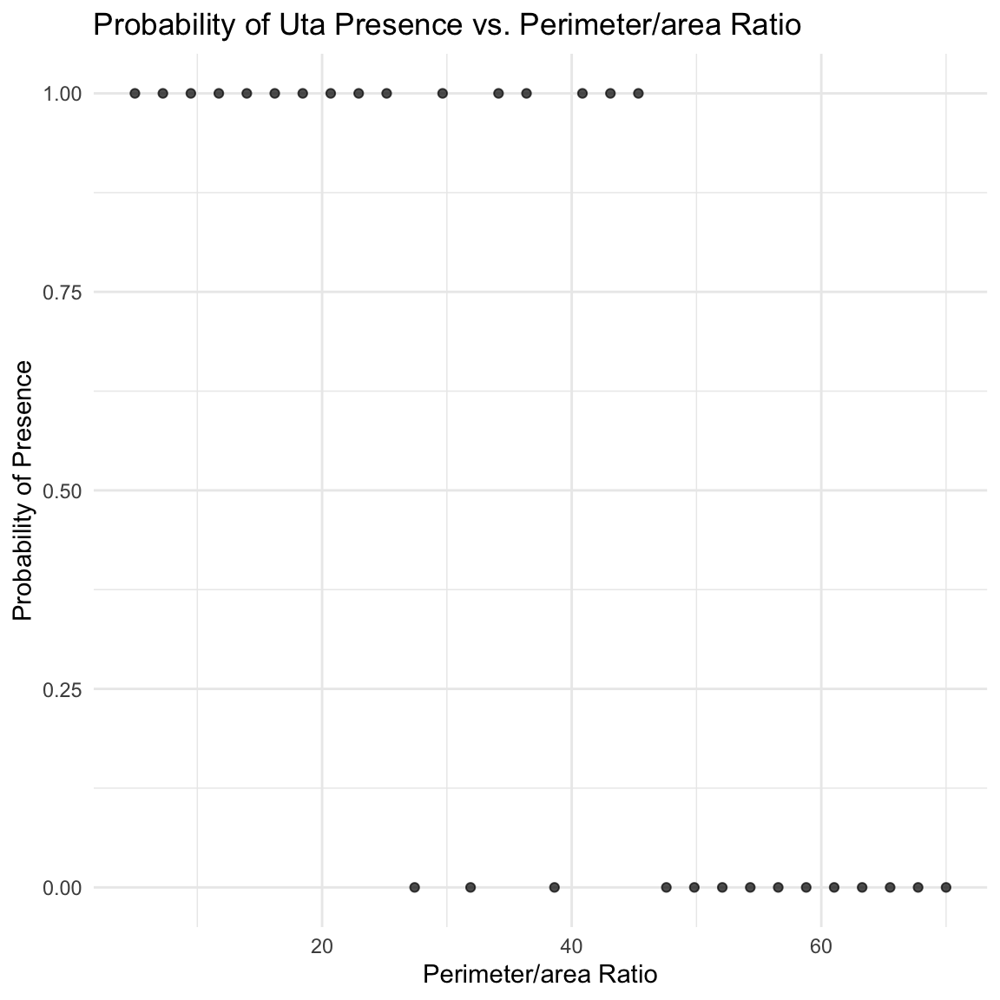
Example: Lizard Presence on Islands
Based on the example from Polis et al. (1998), we’ll model the presence/absence of lizards (Uta) on islands in the Gulf of California based on perimeter/area ratio.
Call:
glm(formula = uta_present ~ pa_ratio, family = binomial(link = "logit"),
data = island_data)
Coefficients:
Estimate Std. Error z value Pr(>|z|)
(Intercept) 5.9374 2.1297 2.788 0.00530 **
pa_ratio -0.1493 0.0517 -2.887 0.00388 **
---
Signif. codes: 0 '***' 0.001 '**' 0.01 '*' 0.05 '.' 0.1 ' ' 1
(Dispersion parameter for binomial family taken to be 1)
Null deviance: 41.455 on 29 degrees of freedom
Residual deviance: 19.090 on 28 degrees of freedom
AIC: 23.09
Number of Fisher Scoring iterations: 6Lizard Example: Visualization and Testing
Let’s visualize the data and the fitted model:
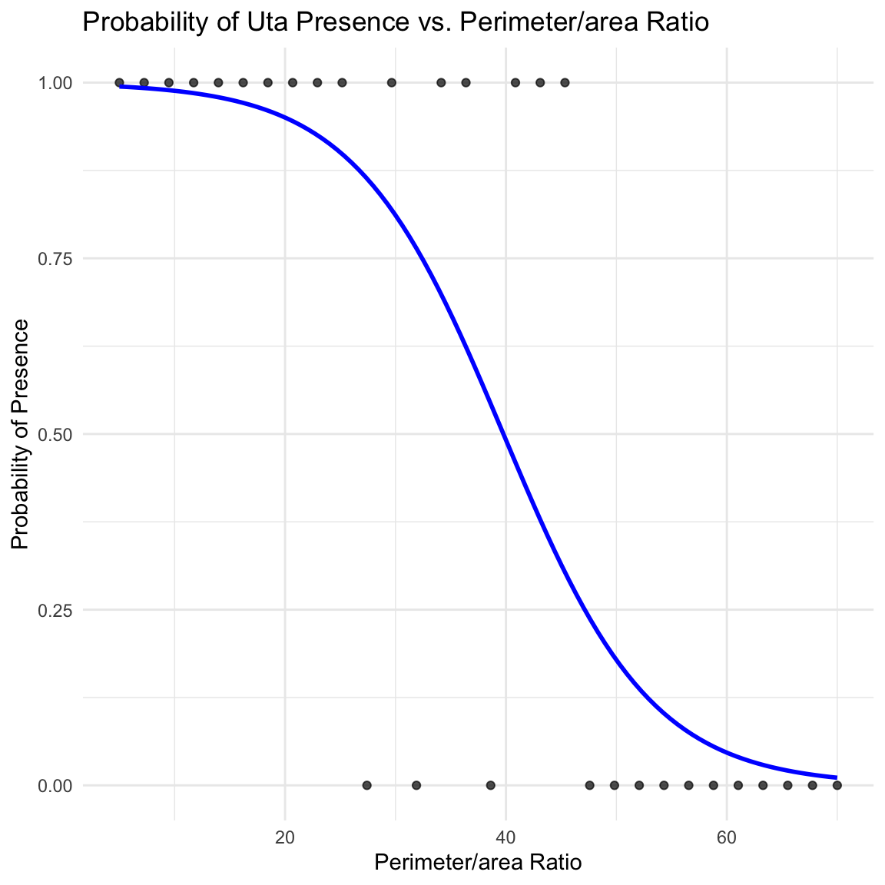
We want to test the null hypothesis that β₁ = 0, meaning there’s no relationship between P/A ratio and lizard presence.
There are two common ways to test this hypothesis:
Wald test: Tests if the parameter estimate divided by its standard error differs significantly from zero
Likelihood ratio test: Compares the fit of the full model to a reduced model without the predictor variable
Analysis of Deviance Table
Model 1: uta_present ~ 1
Model 2: uta_present ~ pa_ratio
Resid. Df Resid. Dev Df Deviance Pr(>Chi)
1 29 41.455
2 28 19.090 1 22.365 0.000002254 ***
---
Signif. codes: 0 '***' 0.001 '**' 0.01 '*' 0.05 '.' 0.1 ' ' 1Interpreting the Odds Ratio
Working with Odds Ratios
The odds ratio represents how the odds of the event (e.g., lizard presence) change with a unit increase in the predictor.
- Odds ratio = exp(β₁)
- If odds ratio > 1: Increasing the predictor increases the odds of event
- If odds ratio < 1: Increasing the predictor decreases the odds of event
- If odds ratio = 1: No effect of predictor on odds of event
- For every one-unit increase in island’s Perimeter/area Ratio - odds of finding a lizard present multiplied by 0.898
- the odds decrease by 10.2% (which is 1 - 0.898) for every one-unit increase in the P/A ratio
- entire interval is below 1.0, you can be confident the relationship is negative: more P/A ratio means lower odds of lizards
Odds Ratio: 0.861
95% CI: 0.753 to 0.932 Parameter | Odds Ratio | SE | 95% CI | z | p
---------------------------------------------------------------------
(Intercept) | 378.94 | 807.02 | [14.47, 94371.40] | 2.79 | 0.005
pa ratio | 0.86 | 0.04 | [ 0.75, 0.93] | -2.89 | 0.004This gives you the odds ratio (in the estimate column) and the exponentiated CIs (conf.low, conf.high) for all terms in your model, all in one clean table.
# A tibble: 2 × 7
term estimate std.error statistic p.value conf.low conf.high
<chr> <dbl> <dbl> <dbl> <dbl> <dbl> <dbl>
1 (Intercept) 379. 2.13 2.79 0.00530 14.5 94371.
2 pa_ratio 0.861 0.0517 -2.89 0.00388 0.753 0.932Assessing Model Fit
There are several ways to assess the goodness-of-fit for logistic regression models:
# R2 for Logistic Regression
Tjur's R2: 0.588fitting null model for pseudo-r2 llh llhNull G2 McFadden r2ML r2CU
-9.5450726 -20.7276993 22.3652534 0.5395016 0.5255070 0.7017187
Hosmer and Lemeshow goodness of fit (GOF) test
data: lizard_model$y, fitted(lizard_model)
X-squared = 2.4032, df = 8, p-value = 0.9661Logistic regression has different and generally fewer assumptions to test than standard linear regression.
The main “assumptions” for logistic regression are:
Binary Outcome: The dependent variable must be binary (0/1) or proportional (e.g., number of successes / number of trials). Your uta_present is 0/1, so this is met.
Independence of Observations: Each observation (each island) must be independent. This is a study design assumption.
Linearity of the Logit: This is the most important one to test. It assumes a linear relationship between any continuous predictors and the log-odds (logit) of the outcome.
No (or little) Multicollinearity: If you have multiple predictors, they shouldn’t be highly correlated with each other.
- Linearity of the Logit (The Most Important Check) continuous predictor (pa_ratio) has a linear relationship with the log-odds of the outcome looking for a flat, non-curved line.
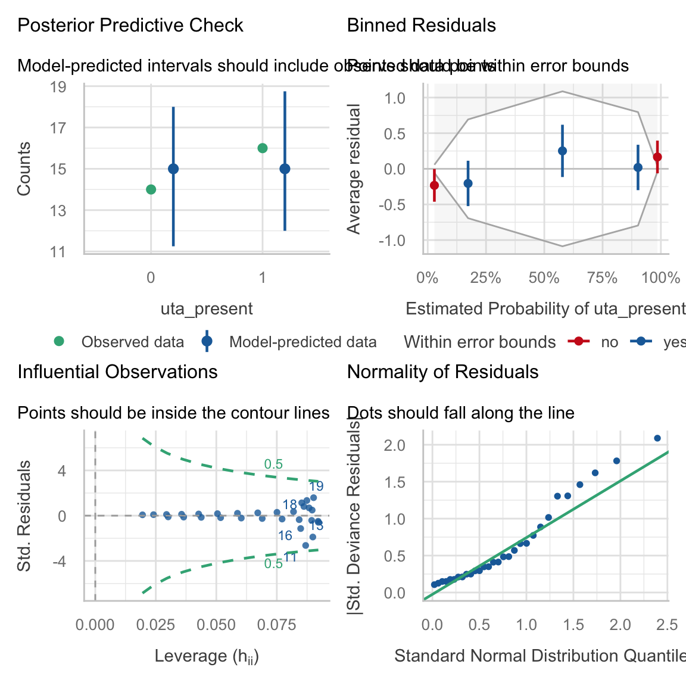
DHARMa is excellent for GLMs. It simulates residuals and plots them against predictors. This is a very robust way to check for all kinds of model misfit, including non-linearity. plotResiduals function will show three quantile regression lines. You want all three (the solid red one and two dashed ones) to be flat and near 0.5. If they are sloped or curved, it indicates a pattern that your model missed (i.e., non-linearity).
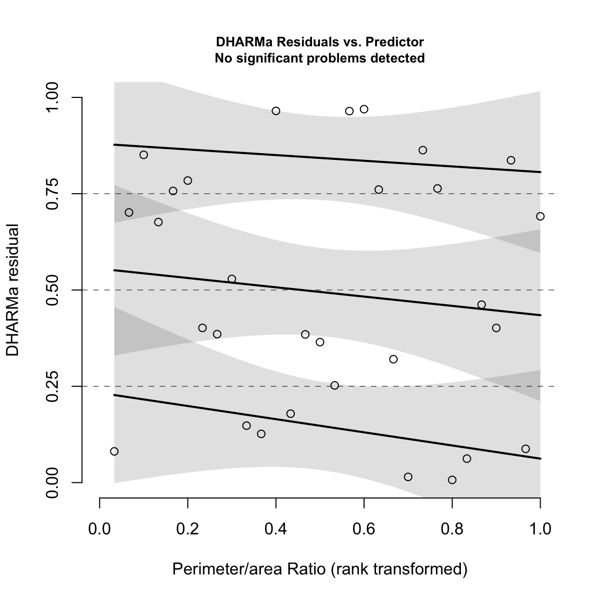
- Multicollinearity only with 2 or more predictors
if you did have more predictors (e.g., pa_ratio and island_area), you would test it like this:
- Overall Model Fit (Goodness-of-Fit) This isn’t an “assumption” so much as a check that the model as a whole is adequate. You already have the two main tests in your file!
Hosmer-Lemeshow Test (from your code) Interpretation: For this test, a GOOD model has a non-significant p-value (p > 0.05). This means your model’s predicted probabilities are not significantly different from the observed probabilities in the data, which is what you want.
Hosmer and Lemeshow goodness of fit (GOF) test
data: lizard_model$y, fitted(lizard_model)
X-squared = 2.4032, df = 8, p-value = 0.9661